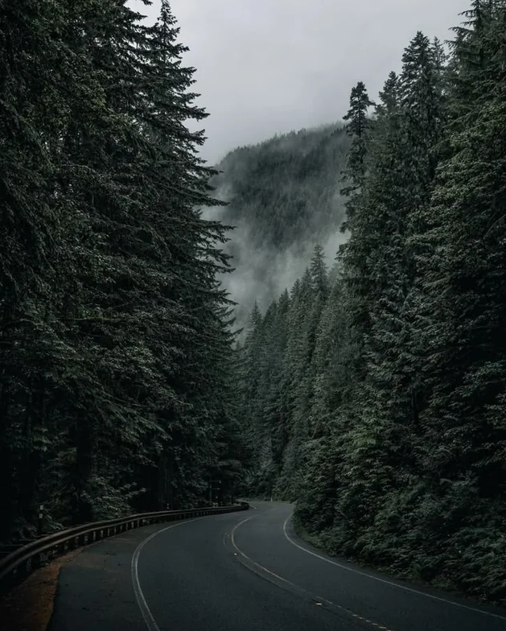
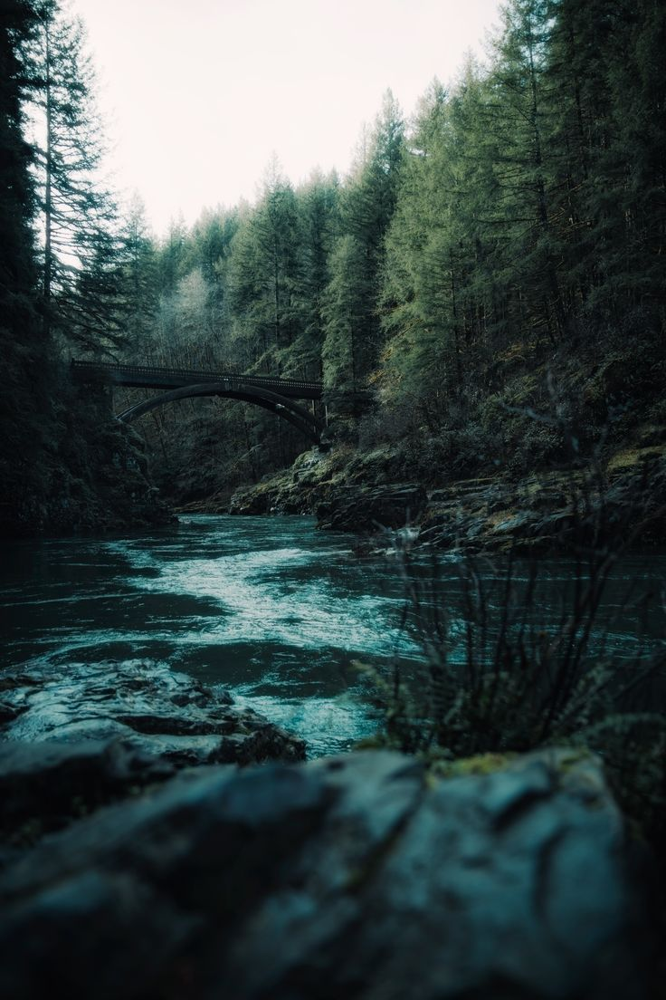

Dream Vacation
Forks, Washington 🌲
Date: December 15, 2025
My dream vacation would be to Washington State, specifically the town of Forks. I am drawn to Washington because of its cool, cloudy weather and natural scenery, which creates a calm and peaceful atmosphere. I am also a fan of the Twilight series, and visiting Forks would allow me to experience the setting that inspired the story. While in Forks, I would explore the surrounding forests, visit local landmarks related to the movies, and enjoy the small-town environment. I would also like to visit nearby beaches, take nature walks, and enjoy the rainy weather that makes the area unique.
Activities to do:
- Exploring the forests and hiking trails around Forks
- Visiting Twilight filming locations and landmarks
- Walking along nearby beaches such as La Push
- Taking nature photos in the rain and foggy scenery
- Enjoying the cool, cloudy weather unique to the area
- Visiting local shops and small-town attractions

